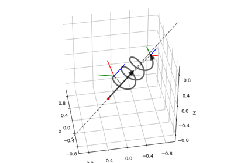
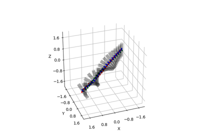

pytransform3d.transformations.transform_from¶
- pytransform3d.transformations.transform_from(R, p, strict_check=True)[source]¶
Make transformation from rotation matrix and translation.

- Parameters:
- Rarray-like, shape (3, 3)
Rotation matrix
- parray-like, shape (3,)
Translation
- strict_checkbool, optional (default: True)
Raise a ValueError if the transformation matrix is not numerically close enough to a real transformation matrix. Otherwise we print a warning.
- Returns:
- A2Barray-like, shape (4, 4)
Transform from frame A to frame B
Examples using pytransform3d.transformations.transform_from¶



Plot Transformation through Screw Motion
Plot Transformation through Screw Motion


Rotate Cylinder